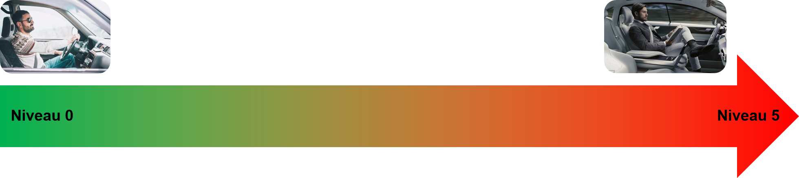

Les voitures autonomes
Avant props
Passionné d’automobile depuis tout petit je souhaite présenter ma veille technologique dans ce domaine.
Qu’est-ce qu’une voiture autonome ?
Une voiture autonome à proprement parlé est une voiture qui se conduit sans conducteur mais actuellement les voitures 100% autonomes ne sont pas encore au point sur le marché.
Quelle est la technologie utilisée ?
La technologie qu’utilise les voitures autonomes sont des puces informatiques. Il existe trois types de puces :
- La puce de détection qui représente les yeux et les oreilles de la voiture.
- La puce de traitement qui représente le cerveau de la voiture.
- La puce de commande qui représente le cœur de la voiture.
Il existe différent niveau d’automatisation :

Niveau 0 : Le véhicule n’est pas autonome, c’est le conducteur qui contrôle tout.
Niveau 1 : Le véhicule n’est pas autonome mais bénéficie d’aide et assistance à la conduite.
Niveau 2 : Le véhicule devient autonome lorsque le conducteur le souhaite mais doit surveiller la conduite malgré l’autonomie en gardant les mains sur le volant.
Niveau 3 : Le véhicule devient autonome dans des conditions prédéfinies, le conducteur peut lâcher le volant et les pédales mais doit surveiller la conduite.
Niveau 4 : Le véhicule devient totalement autonome dans des conditions prédéfinies, le conducteur peut lâcher le volant et les pédales et n’a pas besoin de surveiller la conduite.
Niveau 5 : Le véhicule est 100% autonome.
Pour pouvoir vous faire projeter dans ce thème je vous propose 2 articles pour permettre de vous faire un avis clair et constructif.
Article 1
Article 2
Ainsi qu'un récapitulatif sur l'ensemble des articles :
Récapitulatif